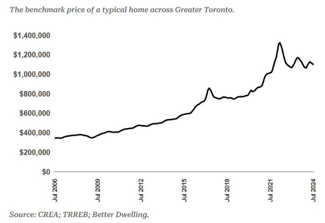
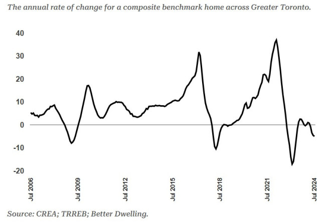
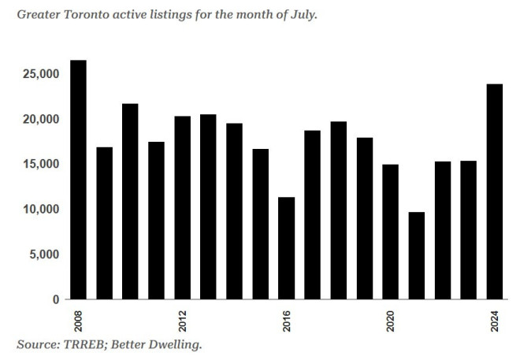

多伦多地产局(TRREB)的数据显示，7月份房价下跌。尽管人口快速增长，但需求仍然处于历史低位，因为卖家本月的挂牌量接近历史最高水平，而买家的成交量却是最低的。
大多伦多地区房价已停滞三年
大多伦多地区房地产价格再次下滑。7月份，基准房价下跌1.2%（-13,300元）至1,097,300元。这使得典型房价比去年下降5.0%（-57,100元），比2022年3月创下的历史高点下降17%（-224,700元）。
房价与2021年10月大致相同，近3年来一直停滞不前。

大多伦多地区房地产价格下跌正在加速

房地产投资者原本希望房价能因利率降低而上涨，但趋势似乎却相反。年增长率正在进一步下降——这对买家来说是好消息，对卖家来说是坏消息。
多伦多房地产销售依然疲软，而库存大幅增加
需求疲软是问题的主要部分，尤其是当与库存突然激增形成鲜明对比时。7月份现有房屋售出5,391套，较上年同期增长3.3%。这是增长，但幅度不大——这是十多年来7月份第三疲软的数据。近年来，只有2022年和2023年的销售情况比今年更疲软，虽然显示出一些进展，但情况远非正常。
与此同时，许多卖家纷纷进入市场。7月份新房源数量较去年同期增长18.5%，达到16,296套。这是自2020年以来该月的最大增幅。
新库存激增导致7月份需求平衡创下历史新低。销售与新挂牌比率(SNLR)降至仅33%，创下当月新低。这一水平远低于需求过剩水平，行业预计价格将下跌。
多伦多房地产库存创2010年以来最高水平

说到库存，不仅仅是新增供应——销售不足也导致库存积压。7月底的活跃房源同比增长55.4%，达到23,877套。这个数字对于当月来说异常高——是2008年以来最多的。
大多伦多地区的房地产需求创历史新低，尽管房价与去年相比没有太大变化。价格区间的紧密盘整表明市场不确定需求将走向何方，原因也显而易见。
一方面，房地产行业正呼吁更高的需求以应对较低的利率，这也是推动市场大幅上涨的因素。此外，该地区传统上是加拿大快速增长人口的主要来源。
另一方面，投资者不再像以前那样轻松赚钱。出售的库存中，很多是投资者想要减仓。与此同时，新的公寓投资者发现回报远不及预期，而出租空置率却大幅上升。这些叙述和数据相互矛盾，几个月后才能确定哪一种说法是正确的。